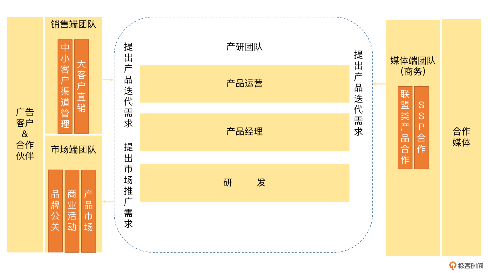
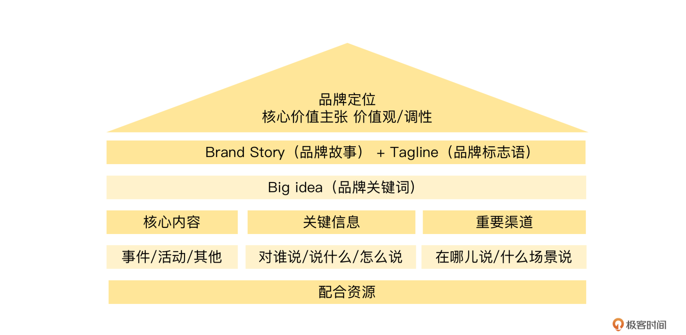
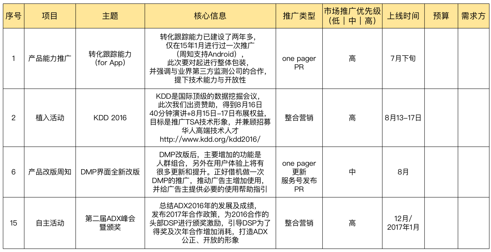
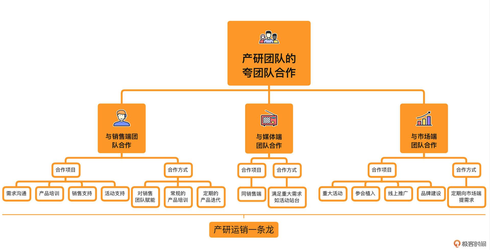

- 00 开篇词 作为一名互联网人，你为什么必须了解广告产品？.md.html
- 01 业务逻辑：广告产品的前世今生和商业模式是怎样的？.md.html
- 02 业务链条：广告主、媒体、第三方等分别如何看待广告产品？.md.html
- 03 头部玩家：从BAT到跳动的字节，广告产品有哪些变化与发展趋势？.md.html
- 04 产品体系：互联网大厂的广告产品存在哪些共性和区别？.md.html
- 05 变现模式：什么样的产品适合采用广告模式变现？.md.html
- 06 产品路线：大厂和小厂的广告产品发展路线有什么区别？.md.html
- 07 计价与效果（上）：如何制定合理的计价方式？.md.html
- 08 计价与效果（下）：如何制定合理的效果评估指标？.md.html
- 09 效果优化：如何一步步从提升曝光量深入到提升销量？.md.html
- 10 流量优化：如何兼顾广告收入和用户体验？.md.html
- 11 物料生产：如何满足广告主的创意需求？.md.html
- 12 精准定向：如何建立一个成熟的用户标签体系？.md.html
- 13 转化优化：互联网大厂如何利用算法优化广告效果？.md.html
- 14 程序化交易：程序化交易是否可以提升广告效果？.md.html
- 15 需求调研：广告产品潜在需求的调研流程是怎样的？.md.html
- 16 平台建设：如何从0到1建立一个完整的广告产品平台？.md.html
- 17 职业发展：新人入行，如何判断自己是否适合做广告产品？.md.html
- 18 团队建设：如何搭建一个高效的广告产品团队？.md.html
- 19 跨团队合作：产研团队和销售端、媒体端、市场端如何合作？.md.html
- 20 产品运营：不同发展阶段如何制定业务目标和运营策略？.md.html
- 21 广告产品彩蛋：课程答疑与推荐书目.md.html
- 结束语 你想要成为什么样的互联网广告产品人？.md.html
- 捐赠
19 跨团队合作：产研团队和销售端、媒体端、市场端如何合作？
你好，我是郭谊。
在上一讲中，我为你介绍了产品团队的内部分工，以及产研团队之间的合作。虽然产研团队可以被看作一个整体，是产品生产环节的核心团队，但是一个广告产品除了设计、开发及上线之外，还需要售卖、推广，需要外部的合作伙伴共同完成。因此，产研团队还需要和很多兄弟团队进行合作，以便推动其他环节的工作。
在这一讲中，我将带你了解如何与其他几个重要的业务团队合作，包括面对广告客户的销售端团队、面对合作媒体的媒体端团队，以及面对外部广告市场的市场端团队。

产研团队VS. 销售端团队
销售端团队的结构
完整的广告销售团队包括：
- 大客户直销团队：负责针对大广告主进行直接的客户拓展和广告产品售卖。
- 直客团队 ：负责和广告主对接，对接的部门一般是广告主的市场部。
- 渠道团队：负责和广告代理公司对接，对接的部门一般是代理公司的媒介部 。
- 销售支持：包括销售策划、销售运营、广告审核团队、广告上线组等。
- 渠道管理团队：负责针对服务中小广告主的外部渠道商进行管理、支持与培训。
销售团队一般按照片区或者行业进行客户划分。
产研团队和销售端团队的合作项目
- 需求沟通：销售团队可以说是广告产研团队最大的内部客户，也是我们的产品需求主要来源之一。在BAT工作期间，我们每个季度甚至每个月，都会去北上广深各地的公司，找销售团队了解客户的需求。这个过程被我戏称为“老中医出诊”。
- 产品培训：有新产品上线，或者产品有新功能上线，我们都会尽快对销售团队进行远程或者线下的产品培训。因为只有销售先了解了产品，才能更好地向客户推荐和售卖产品。另外，还有一些产品属于内部运营工具或者数据工具，销售也需要及时掌握。
- 销售支持：在一些大客户的年度框架提案、新产品测试沟通、广告投放结案总结中，我们可能会随销售团队一起拜访客户，给客户讲解新产品，或者解答客户对于广告产品的一些疑问。这主要是为了支持销售，同时也是我们收集产品需求的渠道之一。
- 活动支持：销售会经常组织一些客户沙龙，例如汽车行业客户沙龙等。在这些活动中，销售会邀请产品经理去介绍广告产品，以便推广、售卖。对于这类活动，我们是很乐意支持的。
除了以上项目，销售平时也会经常找我们咨询产品信息，或者寻求一些临时性的支持。我们一方面可以从中获取重要的产品需求；另一方面，我们也要为销售团队提供必不可少的日常支持。
产研团队和销售端团队的合作方式
在广告产品尚未完善的时候，销售对产品也不熟悉，我们对于销售的支持会比较繁杂和琐碎，包括客户随访也会比较多。比如我在百度富媒体广告网络工作的初期，入职才几天就被销售拉去华南给比亚迪等客户做产品培训了。新产品测试及刚上线的时候，这类直接支持会比较多。
等到广告产品功能日趋完善的时候，销售对产品更加熟悉了，同时我们也能够提供更加齐全的产品资料了。这时候，我们努力的方向就有一些变化了：
- 把大包大揽的销售支持，变成对销售团队赋能。很多工作原来都是产品团队自己来做，例如代理型广告投放平台的广告代投放、数据报表的监控及优化等。这时候，我们就要把这些工作交给销售团队去做了，广告代投放交给销售团队的广告上线组，数据报表的监控及优化就培训销售团队自己看，有问题再来找产品。产研团队集中精力做好产品和内部运营、数据工具的迭代，还有对销售团队的业务培训。
- 把频繁的点对点支持，变成常规的产品培训。到了广告产品比较完善的时候，我们重点对销售团队进行产品培训，再由销售团队对客户进行产品培训。就像我在百度的时候，每个季度初会去北上广深跑一圈，进行定期的销售团队产品培训；在阿里的时候，我们如果有一些比较小的新功能上线，为了提高效率，会和销售团队沟通，利用销售周会的部分时间进行产品培训和答疑。
- 把随时输入需求变成定期的产品迭代。在产品还不完善的时候，销售对产品有任何的新需求，我们都会在第一时间作出判断，并且对研发团队进行必要的需求输入和产品迭代推进。到了产品比较完善的时候，研发团队的产品时间由随时变成了定期，例如两周一次。我们收集、筛选和评审过的产品需求，会根据需求优先级，合理地安排上线时间进行开发迭代。-

产研团队VS. 媒体端团队
媒体端团队，也叫做商务团队或者BD（Business Development）团队，包括联盟类产品和SSP等业务方向。我们以联盟类产品的商务团队为例来聊一聊它与产研团队之间的合作关系。
媒体端团队的结构
联盟产品的商务团队和销售团队有相似之处。商务人员主要是按照合作媒体的类型进行分工。仅以App为例，就有资讯、娱乐、阅读、游戏、工具等众多垂直类型。现在，头部媒体平台又接入了电视大屏、户外广告等更多类型的合作媒体。如果说销售团队为我们输入的主要是来自客户等需求侧的需求，那商务团队为我们输入的主要就是来自供给侧也就是媒体侧的需求。因此，商务团队也是我们的内部客户之一。
产研团队和媒体端团队的合作项目
产研团队和商务团队的合作项目，可以类比产研团队和销售团队的合作项目，也包括需求沟通、产品培训、商务支持、活动支持、日常支持等。只不过，销售团队和前端产品样式设计、投放平台设计等产品团队沟通较多，商务团队和流量侧平台设计、联盟类产品团队沟通较多。
需要提醒你的是，头部媒体平台的联盟类产品，会针对合作媒体召开峰会。比如百度每年都会召开联盟峰会，在峰会上，商务会邀请产研团队的领导去站台，来显示合作媒体在产品、研发等方面的大力支持。
产研团队和媒体端团队的合作方式
一般来说，商务团队和产研团队的沟通频率，除了在联盟类产品和流量侧平台等特定产品上，相比销售团队，没有那么频繁。因此，我们除了参考和销售团队的合作方式，要更加注意的是：正因为商务对我们的需求相比销售而言没有那么多，所以我们更要集中精力办大事，尽可能地满足商务团队的重大需求，像一些合作媒体期待的新的产品形式，比如激励视频广告产品的开发，还有重大活动，比如给联盟峰会站台等，我们都要大力支持。
产研团队VS. 市场端团队
如果说销售端团队和媒体端团队在日常合作中，通常是我们的需求方，那么市场端团队就是我们的被需求方。因为我们需要市场端团队为我们建立产品品牌和口碑。产品有了品牌美誉度和市场声量，可以更好地支持销售端和媒体端的工作。
市场端团队的结构
以我在腾讯广告时的市场端团队为例，内部分为产品市场、商业活动、品牌公关等几个不同方向：
- 产品市场：作为产研团队（包括产品经理、研发、产品运营）和市场的接口人，负责梳理产品的市场推广需求，并制定市场推广计划，与商业活动、品牌公关等团队共同跟进执行。产品市场相当于市场端团队内部的需求方。
- 商业活动：负责策划和制定线下市场活动，包括自办活动、参加行业会议、论坛植入等等，一般会联系外部的公关公司负责提案和执行。
- 品牌公关：负责线上品牌相关内容的产出和推广，包括产品品牌形象设计、线上广告投放、线上KOL合作等，同时也负责运营官方订阅号。
此外，还有同时负责腾讯广告官网和官方客服号的运营，需要对销售转化的线索负责。其他大厂市场端团队可能组织架构会有所不同，但是都需要具备以上职能。
市场端团队的职能是负责广告产品线的市场费用的管理和使用。所以，我们必须要学会向市场端团队提需求，才能有效地推动这笔费用花在刀刃上。市场工作取得了成效，市场端团队才能在未来给我们的广告产品线争取更多的市场费用。
产研团队和市场端团队的合作项目
- 重大活动
市场端团队每年会做几个重大活动。以百度为例，负责广告产品的商业市场部每年会做三个大活动，一个是百度世界大会，广告产品会在其中一个分论坛百度营销论坛中登场；一个是百度营销峰会，是面向广告主、广告代理公司和第三方服务公司的广告产品的主场大会；一个是百度联盟峰会，是面向联盟类广告产品的合作媒体的。
这些重大都是广告产品对外亮相和推广的好机会，一定要鼎力支持，利用这些机会充分展示我们的产品实力和未来愿景，吸引更多的广告主和合作媒体。
- 参会植入
每年国内都有很多大型营销论坛以及广告奖项，我们可以向市场端团队申请，让产研团队部分人员参会、植入我们广告产品的宣传，或者拿我们的广告投放案例去报奖。参会、植入和报奖都可能会产生费用，市场端团队评估后，会给我们返回方案，双方确认后，我们按照方案准备参会人员名单、植入内容和报奖案例即可。
- 线上推广
线上推广包括内外部广告投放、各社交平台及自媒体KOL合作等。我们同样可以向市场端团队提出需求，市场端团队会给我们提供广告投放或者KOL合作方案，双方确认后，我们提供一部分素材，并对上线前的广告物料或者推广内容从产品角度进行审核即可。
- 品牌建设
除了外部的线下和线上市场推广，我们产品自身的品牌建设也很重要。从工作内容上说，品牌和产品定位、口号、独特的价值主张、品牌信息屋以及整合营销传播方案等，都需要市场端团队来主导。从产出来说，官网、官方公众号等自有媒体矩阵的建设，也都需要市场端团队来负责。

产研团队和市场端团队的合作方式
产研团队作为市场端团队的需求方，在每年/每半年/每季度都应该及时向市场端团队提出广告产品及品牌的推广需求。
以我在腾讯广告期间的经验为例，某个时期，产研团队希望推广的内容可能会包括oCPC转化优化能力的推广、DMP平台改版推广、算法团队参加国际顶级数据挖掘会议KDD、举办面向外部合作DSP的ADX峰会等。市场端团队会收集这些需求的具体内容和实施时间，按照产品需求的优先级、开发人力资源的预算等类似的标准来进行评估，并经过内部沟通后，给产研团队返回市场推广方案，经过双方确认后落地执行。

建设产研运销一条龙合作机制
在产研团队和其他团队合作的过程中，最重要的是建立产研运销一条龙的机制。
- 一方面，销售端和媒体端的需求可以输入到产研团队，推动广告产品更新迭代，让前端产品设计、平台型、工具型和数据型产品设计等更能满足内部的销售、商务或者外部的客户、合作媒体的需要。
- 另一方面，产研团队可以对销售端、媒体端、市场端提出产品价值的对外传递需求，销售团队通过对客户购买广告产品，商务团队通过接入更多优质合作媒体，市场团队通过对产品品牌形象及产品自身的市场推广，来实现产品价值的传递，并且为公司带来收入。
重点回顾
在这一讲中，我们通过百度、腾讯等大厂内部的真实案例，分析了产研团队如何与销售端、媒体端和市场端团队进行高效合作。

销售端和媒体端团队主要是产研团队的需求方，它们之间的合作项目主要有需求沟通、产品培训、销售支持、活动支持和日常支持等。销售端团队是产研团队主要的需求输入方；产品团队和媒体端团队（联盟类产品或SSP的商务团队）的合作项目主要有需求沟通、产品培训、商务支持、活动支持、日常支持等。媒体端团队也是产研团队重要的需求输入方，特别是针对前端广告产品设计和流量合作平台。
在广告产品发展的初期，产研团队对以上团队的支持是频繁的。等到产品相对完善之后，产研团队和以上团队的分工应该更加明确，并且把经过验证的工作内容合理地转交给以上团队的相关人员，通过产品化、产品解决方案和产品培训等方式对他们进行赋能，从而把精力集中在产品迭代及新产品的开发上。
市场端团队主要是产研团队的被需求方，以接收并满足产研团队的需求为主。对于大部分广告产品经理来说，虽然我们也算是营销从业人员，但是市场端团队的视角和工作方式与产品经理有很大不同。但只要你了解到市场端团队对产品主要的支持，比如说重大活动、参会植入、线上推广和品牌建设等，并且知道怎样提市场推广需求，作为产品应该提供哪些资料，就能比较顺畅地与市场端团队沟通并向他们借力了。
实战演练
请你选择一个广告产品，根据这个产品填写本讲中品牌信息屋的内容。你可以从这个广告产品所在的官网、官方公众号、社交平台、各种媒体和自媒体上的相关报道及软文中，获取有效信息。
这个作业不光能帮助你在未来更好地对市场端团队提出需求，而且也会让你在例如市场端团队刚成立还不熟悉产品，或者公司还在发展中市场端团队尚未成型等情况下，分担及补位市场端团队的部分工作。欢迎你把“成果”展示在留言区，也欢迎你把这节课分享给需要的朋友，我们下节课再见。
© 2019 - 2023 Liangliang Lee. Powered by gin and hexo-theme-book.